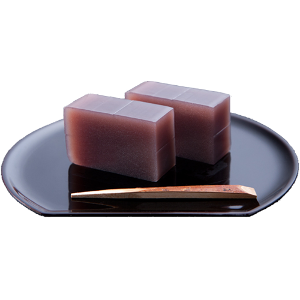

当店ではお茶の国・静岡から厳選されたお茶を仕入れています。お好みのお茶を量り売り、その場で真空パックして新鮮な状態でご提供いたします。静岡茶ならではの深い味わいをお楽しみください。
最高級の緑茶です。渋みが少なく旨味が多い、贅沢な一品です。
緑茶の中でも代表的な煎茶は、選りすぐった極上品はもちろん、御家庭向き・会社向きと種々にございます。
深蒸し茶は渋みや苦みが少なく、まろやかで深みのあるお茶です。当店で１番人気のお茶です。
くき茶は独特のさわやかな香りと甘みが特徴の飲みやすいお茶です。
煎茶に炒った玄米を混ぜ合わせたブレンド茶で、玄米の香ばしい香りが引き立つお茶です。

花粉症対策に効果のあるべにふうき緑茶。当店販売のべにふうきは花粉症抗アレルギー成分「メチルカテキン」が100mg/2490mgと高濃度。効果がある！とリピーター続出です。飲みやすい粉末スティックタイプをご用意しております。
有田焼、美濃焼、萩焼、常滑焼などの高級品から普段使いのお手頃な価格のものまで豊富な種類の急須、茶碗を取り揃えております。

柏名産の柏火山焼きをはじめ、お茶のお供に最適なお煎餅、羊羹、千葉県産落花生などを販売しております。


柏駅中央口・南口直結ファミリかしわの1Ｆです。お茶と書かれた黄色のノボリが目印です。地元の方にご愛顧頂いております。どうぞお気軽にお立ち寄りくださいませ。
千葉県柏市柏１丁目１‐１１ 柏駅前丸井ビル１Ｆ
tel：04-7167-6505
営業時間：10:00～19:00